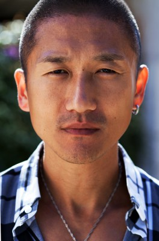

#9818 Camorra Vendetta
Alternativ: Concrete Romance (Englischer Titel)

 IMDB-Wertung: 6.0 / 10
IMDB-Wertung: 6.0 / 10  Metascore: 0
Metascore: 0 
Der kleine Gauner Diego (Nicolas Vaporidis) und seine Freundin Asia (Carolina Crescentini) sind ein glückliches Paar in Rom. Sie können keine großen Sprünge machen, aber das Leben liegt noch vor Ihnen und sie freuen sich darauf. Eines Morgens steht Diego mit seiem Scooter mal wieder in einem Stau – eingekeilt auf einer engen römischen Strasse. Ideale Bedingungen für seinen Lieblings-Sport! Er fährt zwischen den Autos hindurch und räumt mit dem Fuss einen Außenspiegel nach dem anderen weg. Dummerweise erwischt er auch den Mercedes von 'Il Primario' (Giorgio Faletti), dem Gangsterboss des Viertels, der Respektlosigkeit nicht vertragen kann. Primario setzt seine Bluthunde in Bewegung, um herauszufinden, wer der Typ auf dem Roller war. Doch auch Diego ist ziemlich sauer auf Primario und sucht nach ihm – allerdings aus einem anderen Grund. Jetzt lautet die Frage: Wer findet als Erster den anderen?
Jahr: 2007
Dauer: 99 Minuten
FSK: 18
Land: Italien Studio: Los Banditos FilmsTonspuren:
Untertitel:
Auflösung: 1080p (1920x816) Größe: 3000 MB
Genre: Thriller
Regisseur: Marco Martani
Drehbuch: Fausto Brizzi, Marco Martani, Luca Poldelmengo
Soundtrack: Paolo Buonvino
Darsteller:
- Nicolas Vaporidis als Diego Santini
- Carolina Crescentini als Asia
- Paolo Bernardini als Puccio
- Ninetto Davoli als Pompo
-  Yoon C. Joyce als Pang
- Giorgio Faletti als Franco Zorzi 'Il Primario'
- Thamisanqa Molepo als Said
- Fabio Camilli als Commissario Petacchi
- Matteo Urzia als Samuele
- Pietro Ragusa als Tanabuso
- Valon Ratkoceri als Unca
- Maria Paiato als Italia
- Gerolamo Alchieri als Cima
- Stefano Antonucci als Stefano
- Tommaso Ramenghi als Ispettore De Paolis
- Dario Cassini als Silvio Cola
- Alfredo Pea als Capitano
- Eleonora Ceci als Ragazza Puccio
- Nicole Cherubini als Benedetta, figlia del Primario
- Luca Concutelli als Palletta
- Fabrizio Giannini als Agente Moroni
- Michael Korovkin als Victor
- Erica Lico als Ragazza Silvio Cola
- Urbano Lione als Uomo al mobilificio
- Maurizio Lops als Agente Sguazzino
- Paola Minaccioni als Agente Mancini
- Stephanie Morin als Moglie Primario
- Francesca Nunzi als Donna al mobilificio
- Bruno Pavoncello als Renato
- Cecilia Sagnelli als Ragazza Unca
- Stefano Viali als Padre di Diego
- Sergio Zecca als Agente 2
Datei: X:\FSK18-2000-2009\Camorra Vendetta (2007, FSK18, 1920x816).mkv seit 29.10.2018
Festplatte: FSK18
 Es gibt insgesamt 106 Filme in der Gruppe 'FSK18-2000-2009'
Es gibt insgesamt 106 Filme in der Gruppe 'FSK18-2000-2009'